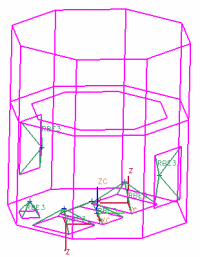

Add the constraint elements (3)
The 1D Connection dialog box is still open from the previous step.
-
Repeat the previous steps to add RBE3 elements to each of the six equipment boxes. You can use the same mesh collector for all RBE3 meshes.
For clarity, the picture below shows the finished RBE3 elements without the 2D mesh displayed.

 Save (Standard toolbar)
Save (Standard toolbar)
The meshing process is now complete. Next, solve the model.